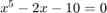
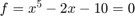
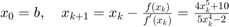
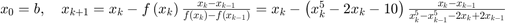
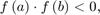
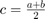
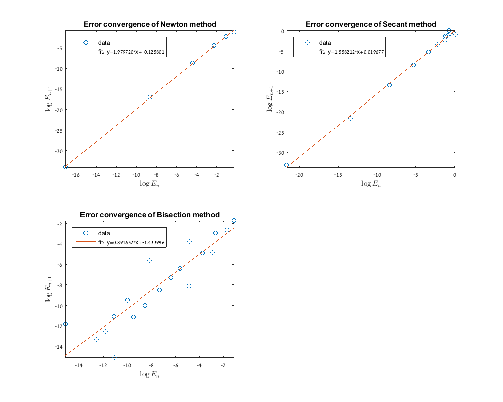

Contents
- HW5
- (a) Solve the equation

- (b) Solve the equation

using the Newton, Secant, and Bisection methods - (b.1) Newton method:

- (b.2) Secant method:

- (b.3) Bisection method:


- (b.4) - tests, verify that the code implments the algorithm correctly
- (c) The convergence rate of the iterations for solving the equation
HW5
% print data nicely format long; format compact;
(a) Solve the equation
The real root in [1,3] is 1.6794
p = [1 0 0 0 -2 -10]; r = roots(p) root = r(imag(r)==0)
r = 1.679397315646853 + 0.000000000000000i 0.413747370254642 + 1.569735547129343i 0.413747370254642 - 1.569735547129343i -1.253446028078067 + 0.829717913315591i -1.253446028078067 - 0.829717913315591i root = 1.679397315646853
(b) Solve the equation using the Newton, Secant, and Bisection methods
a=1;
b=3;
iterations_num=20;
tol=10^(-14);
syms f(x);
f(x) = x^5-2*x-10;
(b.1) Newton method:
[root,i,x,error]=newton(f,a,b,tol,iterations_num)
Netown method converge to the root: 1.6794 after 7 steps
root =
1.679397315646853
i =
8
x =
Columns 1 through 3
3.000000000000000 2.436724565756824 2.029130597460316
Columns 4 through 6
1.783357809503184 1.691302619891177 1.679572300132953
Columns 7 through 8
1.679397354033717 1.679397315646852
error =
Columns 1 through 3
0 0.757327250109971 0.349733281813463
Columns 4 through 6
0.103960493856330 0.011905304244324 0.000174984486100
Columns 7 through 8
0.000000038386864 0.000000000000002
(b.2) Secant method:
[root,i,x,error]=secant(f,a,b,a,b, tol,iterations_num)
Secant method converge to the root: 1.6794 after 13 steps
root =
1.679397315646853
i =
15
x =
Columns 1 through 3
1.000000000000000 3.000000000000000 1.092436974789916
Columns 4 through 6
1.177760896270846 2.773181928222976 1.279278969516385
Columns 7 through 9
1.365842105641307 1.964333811829041 1.570808013086686
Columns 10 through 12
1.645325437411965 1.684509147901910 1.679174724219964
Columns 13 through 15
1.679395893414492 1.679397316043883 1.679397315646849
error =
Columns 1 through 3
0 0 0.586960340856937
Columns 4 through 6
0.501636419376008 1.093784612576123 0.400118346130468
Columns 7 through 9
0.313555210005547 0.284936496182187 0.108589302560167
Columns 10 through 12
0.034071878234889 0.005111832255056 0.000222591426889
Columns 13 through 15
0.000001422232361 0.000000000397030 0.000000000000004
(b.3) Bisection method:
[root,i,x,error]=bisection(f,a,b, tol,iterations_num)
Bisection method did not converge to the root: 1.6794 after 20 steps
root =
1.679397315646853
i =
20
x =
Columns 1 through 3
2.000000000000000 1.500000000000000 1.750000000000000
Columns 4 through 6
1.625000000000000 1.687500000000000 1.656250000000000
Columns 7 through 9
1.671875000000000 1.679687500000000 1.675781250000000
Columns 10 through 12
1.677734375000000 1.678710937500000 1.679199218750000
Columns 13 through 15
1.679443359375000 1.679321289062500 1.679382324218750
Columns 16 through 18
1.679412841796875 1.679397583007813 1.679389953613281
Columns 19 through 20
1.679393768310547 1.679395675659180
error =
Columns 1 through 3
0.320602684353147 0.179397315646853 0.070602684353147
Columns 4 through 6
0.054397315646853 0.008102684353147 0.023147315646853
Columns 7 through 9
0.007522315646853 0.000290184353147 0.003616065646853
Columns 10 through 12
0.001662940646853 0.000686378146853 0.000198096896853
Columns 13 through 15
0.000046043728147 0.000076026584353 0.000014991428103
Columns 16 through 18
0.000015526150022 0.000000267360959 0.000007362033572
Columns 19 through 20
0.000003547336306 0.000001639987674
(b.4) - tests, verify that the code implments the algorithm correctly
test 1 - check converge to root 1
a=0;
b=1.1;
iterations_num=100;
tol=10^(-14);
syms f(x);
f(x) = (x-1)*(x-2)*(x-3)*(x-4)*(x-5);
newton(f,a,b,tol,iterations_num);
secant(f,a,b,a,b, tol,iterations_num);
bisection(f,a,b, tol,iterations_num);
Netown method converge to the root: 1 after 6 steps Secant method converge to the root: 1 after 8 steps Bisection method did not converge to the root: 1 after 100 steps
test 2- the bisection did not converge because of the problem of subtracting close number. so - let's take a more tolerace tolerace. (we take 10^(-6) which is the standart matlab tolerance, (as in 'fsolve')
tol = 10^(-6); iterations_num=20; newton(f,a,b,tol,iterations_num); secant(f,a,b,a,b, tol,iterations_num); bisection(f,a,b, tol,iterations_num);
Netown method converge to the root: 1 after 4 steps Secant method converge to the root: 1 after 6 steps Bisection method converge to the root: 1 after 19 steps
test 3 - check what happens if (a,b) includes more than one root. we should expect inconclusive results
a = 1.7; b = 3.2; newton(f,a,b,tol,iterations_num); secant(f,a,b,a,b, tol,iterations_num); bisection(f,a,b, tol,iterations_num);
Netown method converge to the root: 3 after 3 steps Secant method converge to the root: 4 after 9 steps Bisection method failes: f(a)*f(b) > 0. please choose other values.
test 4 - check what happens if (a,b) is really close to root
a = 2.9; b = 3.1; tol = 10^(-14); newton(f,a,b,tol,iterations_num); secant(f,a,b,a,b, tol,iterations_num); bisection(f,a,b, tol,iterations_num);
Netown method converge to the root: 3 after 4 steps Secant method converge to the root: 3 after 2 steps Bisection method did not converge to the root: 3 after 20 steps
test 5 - check a function that around 0, very different than it's behavior elsewhere. newton and secant would divide by zero (the slop of the direvative of tanh at 0).
a = -1; b = 1; tol = 10^(-14); f(x) = tanh(5*x); try newton(f,a,b,tol,iterations_num); catch ME warning(getReport(ME)); end try secant(f,a,b,a,b, tol,iterations_num); catch ME warning(getReport(ME)); end bisection(f,a,b, tol,iterations_num);
Warning: The following error occurred converting from sym to double:
Error using symengine (line 59)
Division by zero.
Error in newton (line 34)
x(i) = x(i-1) - (f(x(i-1)))/(df(x(i-1)));
Error in HW5 (line 84)
newton(f,a,b,tol,iterations_num);
Error in evalmxdom>instrumentAndRun (line 97)
text = evalc(evalstr);
Error in evalmxdom (line 21)
[data,text,laste] =
instrumentAndRun(file,cellBoundaries,imageDir,imagePrefix,options);
Error in publish (line 164)
dom = evalmxdom(file,dom,cellBoundaries,prefix,imageDir,outputDir,options);
Error in mdbpublish (line 55)
outputPath = publish(file, options);
Secant method converge to the root: 0 after 1 steps
Bisection method converge to the root: 0 after 1 steps
(c) The convergence rate of the iterations for solving the equation
$f=x^5-2x-10=0$ using the Newton, Secant, and Bisection
methods.a=1; b=3; iterations_num=20; tol=10^(-14); syms f(x); f(x) = x^5-2*x-10; % calculate the roots using all methods [root,i,x,error]=newton(f,a,b,tol,iterations_num); error1 = error(2:end); [root,i,x,error]=secant(f,a,b,a,b, tol,iterations_num); error2 = error(3:end); [root,i,x,error]=bisection(f,a,b, tol,iterations_num); error3 = error; Errors = {error1, error2, error3}; Titles = {'Newton', 'Secant', 'Bisection'}; figure('position', [0, 0, 1000, 800]); for i=1:3 error = Errors{i}; x_n = log(error(1:end-1)); y_n = log(error(2:end)); x1 = linspace(min(x_n),max(x_n)); subplot(2,2,i); % calculate fit - only for error ranges disp(['Linear fit of the error convergence of the ', Titles{i}, ' method']); f = fit(x_n',y_n','poly1') % we can use 'fit', but we'll use 'polyfit' and 'polyval' as requested p = polyfit(x_n,y_n,1); f1 = polyval(p,x1); plot(x_n,y_n,'o',x1,f1,'-'); title(sprintf('Error convergence of %s method', Titles{i})); ylabel('$$\log E_{n+1}$$', 'Interpreter', 'Latex'); xlabel('$$\log E_{n}$$' ,'Interpreter', 'Latex'); axis tight; legend('data',sprintf('fit: y=%f*x+%f',p(1),p(2))); legend('Location','northwest'); end
Netown method converge to the root: 1.6794 after 7 steps
Secant method converge to the root: 1.6794 after 13 steps
Bisection method did not converge to the root: 1.6794 after 20 steps
Linear fit of the error convergence of the Newton method
f =
Linear model Poly1:
f(x) = p1*x + p2
Coefficients (with 95% confidence bounds):
p1 = 1.98 (1.927, 2.033)
p2 = -0.1258 (-0.5541, 0.3025)
Linear fit of the error convergence of the Secant method
f =
Linear model Poly1:
f(x) = p1*x + p2
Coefficients (with 95% confidence bounds):
p1 = 1.558 (1.495, 1.622)
p2 = 0.01968 (-0.4874, 0.5267)
Linear fit of the error convergence of the Bisection method
f =
Linear model Poly1:
f(x) = p1*x + p2
Coefficients (with 95% confidence bounds):
p1 = 0.8917 (0.6802, 1.103)
p2 = -1.434 (-3.188, 0.3199)
